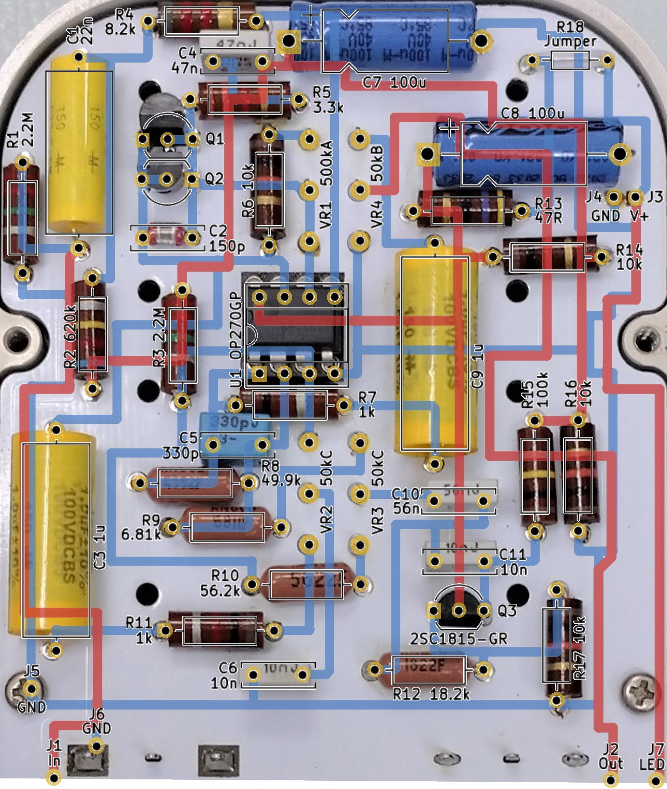
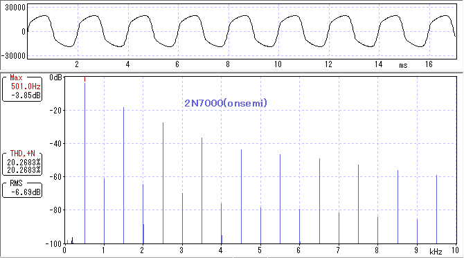

CULT Ray 解析
2023年05月27日 カテゴリー：修理・改造・解析
CULT Rayは公式サイトに回路はオリジナルだと明記してあり、どのようなものか気になっていました。なかなか高価ではあるのですが、たまにはスリルを味わう（？）のもいいかなと思い、初期ロットらしい中古の個体を入手し解析しました。KiCadとLTspiceの回路図データはGitHubにあります。
コントロールノブが落とし込んであるのが特徴的です。筐体と基板に小さな穴があけてあり、そこから細長い棒を突っ込んでノブを外す仕組みになっています。
分解の際、内部構造がわからないので先にポットの足の半田を吸い取ったのですが、Driveポットを付けるパッドを剥離させてしまいました。裏側に半田付けすれば大丈夫だろうと思っていると、そちらのパッドもペリっと剝がれ、配線での修復を余儀なくされました……
自動はんだ吸い取り機も万能ではなく、基板上の銅箔パターンに熱を与え過ぎないようにしなければなりません。まだまだ技術力不足でした。自戒の念を込めて写真を掲載しておきます。
▽基板画像

ベタグラウンドが使われておらず配線が直角で、なんとなくLeqtique CLHDに似ている基板です。カーボンコンポジション抵抗は誤差が大きいため、実測値をKiCadデータに入力してあります。C2はガラス封入されていて、古い積層セラミックコンデンサ（MLCC）らしく特性は不明です（参考ページ→MLCCs encapsulated in glass?）。
▽回路図
Q1、Q2（MOSFET）は表面が削られていて型番不明ですが、Fulltone OCDやZendrive等で採用されているMOSFETのダイオード接続によるクリッピングです。BassコントロールにはSuper Badass DistortionやANODIZED BROWN DISTORTION 4K等と同様、ジャイレータ（シミュレーテッドインダクタ）が使われています。
【クリッピング用MOSFETについて】
Ray実機に元々ついているMOSFETは、わざわざ型番を削るくらいなので一般的なものではないだろうと思います。あまり深追いはしないとして、とりあえずパッケージと足配置が同じで入手しやすい2N7000（onsemi製とUTC製）と比較しました。ちなみに実機MOSFETと同じくパッケージ裏の丸いくぼみに何も書いてないのはUTC製の方です。
MOSFETは端子間の容量が一般的なダイオードより大きいため、この容量が音質に影響することが考えられます。LCRメータでダイオード接続（ドレインとゲートを直結）した時の端子間容量を測定すると、実機MOSFETは65pF、2N7000は60pFと近い値でした（測定周波数100kHz）。
▽波形・歪率・周波数特性（コントロールノブ全て100%）

onsemi製とUTC製では微妙にonsemi製の方が実機に近かったため、onsemi製のデータを掲載しています。MOSFET自体の個体差があるため偶然かもしれませんが、倍音構成や周波数特性がかなり近く、実機の音を再現できているように思います。
▽シミュレーション
※MOSFETは、実測と周波数特性が近かったRK7002Aを使っています。
- 増幅部 Drive変化 0%→50%→100%
Bass最小（Bassカット最大）にしたTimmyと回路定数が似ているため、比較として掲載しています（増幅率を同程度に調整）。RayはMOSFETの端子間容量やC2の影響で、ゲインを上げたとき高音域が下がっています。
- Treble変化 0%→50%→100% (Bass 0%)
単純なローパスフィルタで、Timmyと同じ50kΩと10nFです。ProCo RAT（100kΩと3.3nF）より高音域減少幅は大きくなります。Trebleポットの1、2番端子を接続しないようにしてあるのは、後段との兼ね合いで低音域が変化するのを避けるためと思われます。
- Bass変化 0%→50%→100% (Treble 100%)
イコライザの回路ですが減衰方向の調整はなく、0%の時にはほぼフラットです。主に160Hz付近を増幅しています。